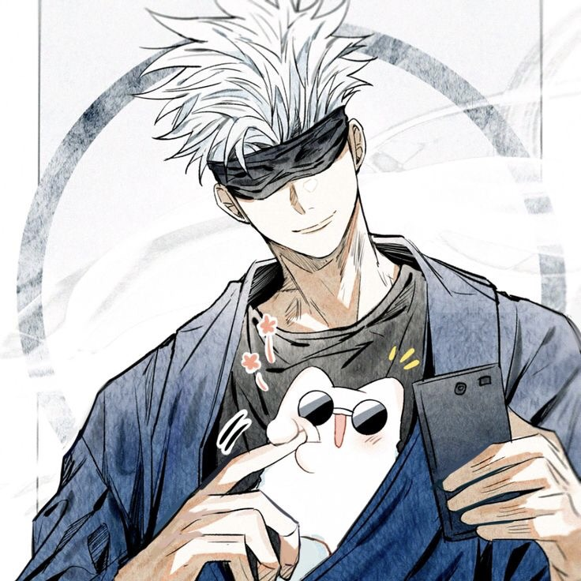

ABOUT KIM DOKJA
He is the sole reader of the webnovel Three Ways to Survive in a Ruined World, an apocalyptic fantasy story written by tls123 who read it through the end.
DOKJA'S ABILITIES
- Omniscient Reader's Viewpoint: the trademark skill, which gives its name to the novel itself.
- Bookmark: Allows Kim Dokja to copy abilities of the characters that he has deep understanding of.
- Fourth Wall: A versatile and mysterious skill that even he Kim Dokja himself does not fully understand, but has a number of abilities that center around Kim Dokja himself.
Kim Dokja with his companions
Kim Dokja's friends
- Cinnamoroll from Sanrio 
- Gojo Satoru from Jujutsu Kaisen
- Shin Yoosung from Omniscient Reader's Viewpoint